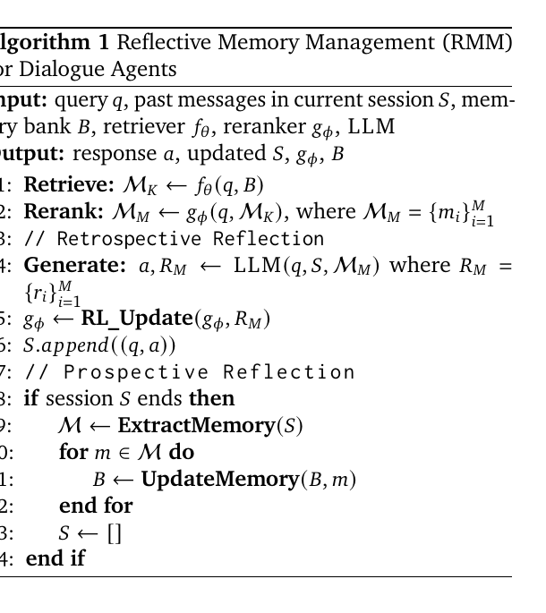
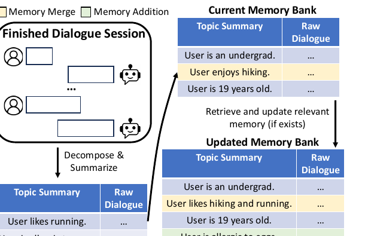
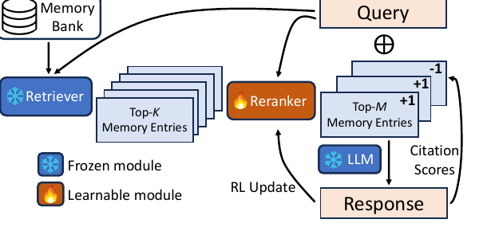

RMM 深度解读
RMM 面向长期个性化对话，解决两个具体问题：固定粒度记忆会把对话主题切碎，固定检索又无法根据用户和场景动态调整。它用 Prospective Reflection 组织未来可检索记忆，用 Retrospective Reflection 根据引用证据在线修正检索。
1. 设计思路：长期对话记忆不是“越多越好”
RMM 针对 personalized dialogue agent。论文认为长期记忆的两个主要障碍是：一，固定粒度的摘要会让同一主题被拆散或重复；二，固定检索机制无法适配不同用户、不同对话阶段和不同任务。
Prospective Reflection
面向未来：会话结束后，把历史对话按 topic 组织成可检索的 memory entries，并决定 merge 或 add。
Retrospective Reflection
回看刚才：根据 LLM 回答中实际引用了哪些记忆，在线更新 reranker。
2. 论文原始框架：Algorithm 1 串起 PR 与 RR

论文 Algorithm 1：RMM 每轮先 retrieve/rerank/generate，再用 citation reward 更新 reranker；session 结束时抽取并更新 topic-based memory bank。
3. Prospective Reflection：把会话整理成未来可检索的 topic memory
Prospective Reflection 发生在 session 结束后。LLM 从会话中抽取 topic summary 与 raw dialogue，并与当前 memory bank 中相近主题比较：相关则 merge，不相关则 add。

论文 Figure 2：会话被 decomposed & summarized；新 memory 与现有 memory bank 对比，相关条目 merge，新主题 add。
4. Retrospective Reflection：用引用证据训练 reranker
Retrospective Reflection 发生在回答时。Retriever 先召回 Top-K，reranker 选择 Top-M，LLM 生成回答并标注每条 memory 是否被引用。这个 citation signal 被转成 binary reward 更新 reranker。

论文 Figure 3：Memory Bank → Retriever → Top-K → Reranker → Top-M → LLM Response；citation scores 作为 RL reward 反向更新 reranker。
Delta phi = eta * (R - b) * grad_phi log P(M_M | q, M_K; phi)5. 实验怎么读：结构化记忆 + 自适应检索
| 证据 | 论文报告 | 含义 |
|---|---|---|
| Table 1 / RMM + GTE | MSC METEOR / BERTScore = 33.4 / 57.1；LongMemEval Recall@5 / Accuracy = 69.8 / 70.4。 | 强 retriever 加上 RMM 的结构化记忆与 rerank 反馈，取得整体最佳。 |
| Table 1 / RAG + GTE | MSC 27.5 / 52.1；LongMemEval 62.4 / 63.6。 | 普通 RAG 有效，但固定检索仍低于 RMM。 |
| Table 2 / Ablation | Contriever 下 RAG 24.8/58.8；+PR 28.6/59.6；+RR 27.5/60.2；完整 RMM 30.8/61.2。 | PR 和 RR 都有贡献，完整系统最好。 |
| Table 3 / Citation scores | LongMemEval 上 useful-memory F1 为 90.2，overall F1 为 86.7。 | 引用信号作为 reward 有一定可靠性，但仍是 LLM 生成信号。 |
6. 工程启发与边界
适合
长期个性化对话、陪伴型 agent、跨会话偏好/经历/健康信息回忆等需要证据连续性的场景。
边界
论文主要处理文本记忆；limitations 中也提到 RL 更新成本、多模态适用性和动态 memory update 仍需优化。
来源与核验边界
本页依据 ACL Anthology 2025.acl-long.413 与 arXiv:2503.08026 整理。实验数字取自论文 Table 1、Table 2、Table 3；对 citation reward 的可靠性按论文验证边界陈述。